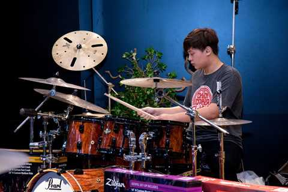

Thông tin mới nhất
-
Vpop tháng 5 - ai đủ sức ‘lật đổ’ Min và Chi Pu?
Min và Chi Pu là tâm điểm của đường đua nhạc Việt thời gian qua. Thế nhưng, vẫn có một cái tên bất ngờ soán ngôi hai cô gái này.
-

Bộ tứ tân binh khiến các sao lớn của Vpop phải dè chừng
Jack, AMEE, Quân A.P, Thịnh Suy là những gương mặt mới của Vpop. Họ được khán giả chú ý nhờ các sản phẩm âm nhạc nổi bật trên #zingchart chỉ trong thời gian ngắn.
-

Chủ nhân hit 'Hồng nhan' dẫn đầu Vpop, vượt Min và nhiều sao Việt
Sau thành công của 2 bài hit "Hồng nhan" và "Bạc phận", Jack vượt qua Min và nhiều tên tuổi lớn của Vpop để dẫn đầu BXH nhạc Việt với ca khúc mới "Sao em vô tình".
-

Trước mỹ nữ 10X AMEE, những cô nàng 'kẹo ngọt' nào từng gây sốt Vpop
Bên cạnh AMEE "gây bão" thời gian gần đây, Phương Ly, Han Sara hay Suni Hạ Linh cũng được khán giả yêu thích khi gắn liền với hình ảnh “cô nàng kẹo ngọt” trên con đường ca hát.
-
Giám khảo Adtima Ignite: Ứng viên sẽ tạo nên tương lai cho Marketing
Sự sáng tạo và niềm đam mê là điều đã được các ứng viên Adtima Ignite 2019 thể hiện tại vòng chung kết Adtima Ignite 2019.
-

Cách lựa chọn nhạc cụ phù hợp với tính cách
Chơi nhạc là một cách để mỗi người bộc lộ cá tính và nâng cao các giá trị tinh thần. Tuy nhiên, không phải loại nhạc cụ nào cũng phù hợp cho tất cả.
-
Tùng Dương lên tiếng định nghĩa 'diva' sau khi Thu Minh tự nhận
Theo Tùng Dương, diva có một chuẩn mực khắc nghiệt. Đó là những nghệ sĩ thực thụ dưới ánh đèn sân khấu, họ học hỏi nhưng không copy.
-
Đan Trường được khen trẻ khi để lại kiểu tóc hai mái thời mới đi hát
Để lại kiểu tóc như những năm đầu tiên đi hát, Đan Trường được khán giả khen trẻ trung dù anh đã bước sang tuổi 43.
-
Taylor Swift để mặt mộc đi tập, lộ thân hình phát tướng
Nữ ca sĩ xuất hiện tại phòng tập với gương mặt mộc có phần kém sắc và thân hình đô con. Ở vài góc ảnh, vòng eo không thon gọn của cô lộ rõ.
-

Nhóm nhạc mỹ nam Nu'EST tới Việt Nam biểu diễn cùng Gil Lê
Ban tổ chức xác nhận nhóm nhạc Nu'EST là khách mời Kpop đầu tiên trong chương trình V Heartbeat Live được tổ chức vào ngày 28/6. Gil Lê cũng có màn tái xuất tại sự kiện này.